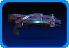
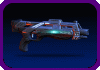
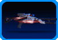
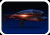

|  | Tornado Shotgun Level 20 Haliat Armory | DAMAGE 1 x D8 | CRIT 0 chance, 1.0 multiplier | MOD SLOTS 0 | Permanent Ammo Mod: Incendiary Permanent Barrel Mod: Extended Barrel | ||
|  | Armageddon Shotgun Level 20 Kassa Fabrication | DAMAGE 1 x D10 | CRIT 0 chance, 1.0 multiplier | MOD SLOTS 0 | Phasing Rounds: Ignore Shield, 0 damage to armor Permanent Ammo Mod: Phasic Aim Assist: Increases accuracy by 25-50% | ||
|  | Equalizer Sniper Rifle Level 20 Haliat Armory | DAMAGE 1 x D10 | CRIT 5 chance, 1.3 multiplier | MOD SLOTS 0 | Permanent Barrel Mod: Extended Barrel Aim Assist: Increases accuracy by 25-50% | ||
|  | Terminator Assault Rifle Level 20 Batarian State Arms | DAMAGE 1 x D6 | CRIT 2 chance, 1.2 multiplier | MOD SLOTS 0 | Fire Type: Impact | Weapon Synergy: Roll all weapon damage as one hit. (Only roll ACC check once. If you miss, all damage misses.) Usable once per encounter. | |
| Storm Shotgun Level 20 Hahne-Kedar | DAMAGE 1 x D8 | CRIT 0 chance, 1.0 multiplier | MOD SLOTS 2 | Modable Barrel Frame | Permanent Ammo Mod: Cryo Bonus Roll Mod Slots: 2 Armor Piercing: Ignore DR | ||
| 0 credits |